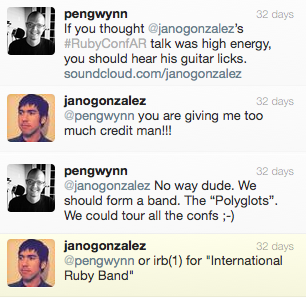

Stop discrimination
We are different in many ways... so what? Forget about what makes you unlike the other person, remember what makes you the same! Learn from the differences to build something together.
Stop isolation
Stop being alone in conferences, in meetups. Everybody loves music. So join the people around you and have fun!
Stop the silence
Express yourself, help others, enjoy the music. Code is not the only thing you can do to improve your community. You can sing, play the guitar, dance or just have a good time.
Incarnations. It's about the message.
It's not about the "who" it's about the "when". IRB will not be a fixed band, everyone can take part. Just tell us when, give us the info and we'll broadcast it here.
Forget about brand, forget about labels. We need to remember as a community to be together, to remember that every move will affect the harmony of the whole. It's about sharing, it's about community, it's about the message.
Do you want to be part of the IRB website? Tell me about your event. Send pictures. Share the love! Join IRB!
Open Source. Give back.
It's about giving back, playing, enjoying, spreading. It's about jumping the gap and make this a better community.
Make the music open-source. Share your shows, jams or just start a new incarnation with your style and the style of your local community. Everyone should take part.
Origin. Know why.
I've seen a lot of complains about discrimination in the wide sense of the word. Discrimination it's the weapon of the weak minded. But instead of making the gap bigger and bigger, instead of making rules on how to live I just want to make the issues fade away. Instead of protecting with fear, let's protect with fun.
Then in RubyConfArgentina 2012 I have the luck to share good times with amazing people around music and fun. And then after spending hours talking about a Ruby Band I feel I needed to do something... but what?.
